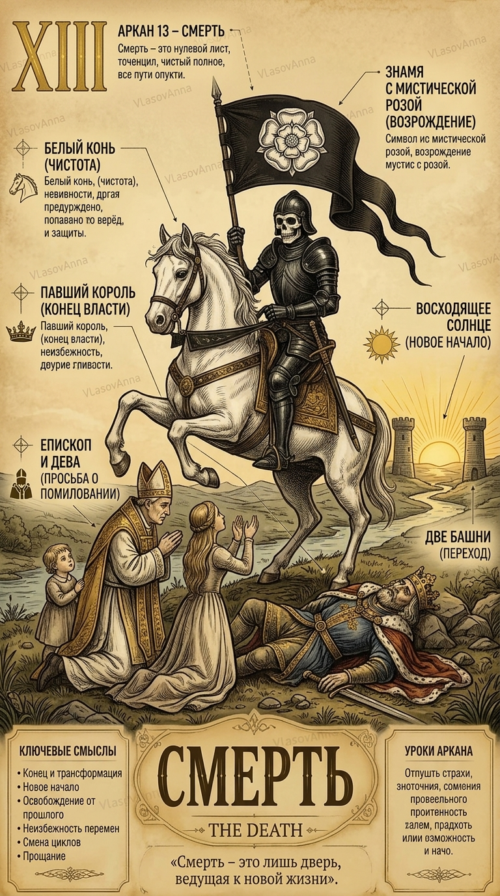

СЕРДЕЧНЫЕ ДЕЛА
13 Аркан в любви и отношениях
Отношения всегда трансформируют обоих. В плюсе — постоянное обновление чувств и выход на новый уровень; в минусе — болезненные разрывы и манипуляции.

13 аркан — одна из самых мощных энергий обновления во Вселенной. Это способность безжалостно отсекать отжившее, чтобы дать пространство новой, цветущей жизни. Это архетип птицы Феникс.
Отношения всегда трансформируют обоих. В плюсе — постоянное обновление чувств и выход на новый уровень; в минусе — болезненные разрывы и манипуляции.
Кризис-менеджмент, реанимация, хирургия, страхование, реорганизация бизнеса, утилизация, инвестиции в стартапы.
Отпускай то, что умерло, с благодарностью. Помни: любая потеря в твоей жизни — это расчистка места для чего-то неизмеримо большего.
ОТВЕТЫ НА ВОПРОСЫ
Нет! 13 аркан в нумерологии символизирует духовную трансформацию, закрытие старых глав и начало качественно нового витка жизни.
Регулярно избавляться от ненужных вещей, закрывать незавершенные дела и не бояться начинать с чистого листа.
Введи дату своего рождения, и наш движок рассчитает все 10 арканов матрицы личности, кармический хвост и знак зодиака за секунду.